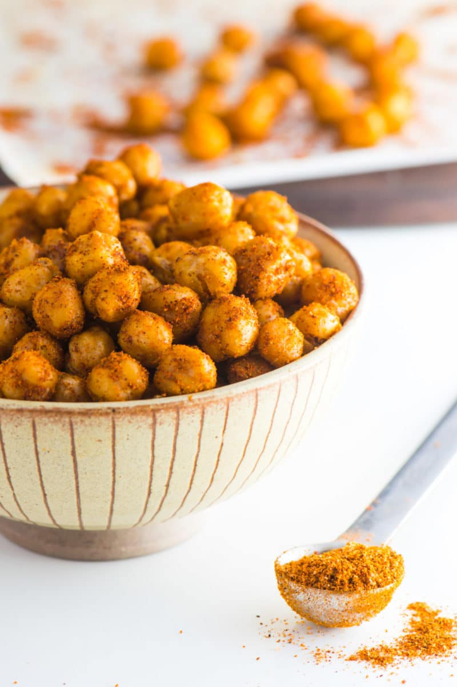

Spicy Roasted Chickpeas

Image of Spicy Roasted Chickpeas
Ingredients
- 15oz can Chickpeas
- 1 1/2 tsp olive oil
- 1/2 tsp salt
- 1 T Mrs. Dash Southwest Chipotle Seasoning*
Steps
-
Preheat your oven to 400°F/204°C. Line a baking pan with parchment
paper.
-
Drain the chickpeas in a strainer, shaking it to remove excess water.
Spread the chickpeas out on a paper towel and pat dry. You can also
just let them sit out for a few minutes to air dry.
-
Pour the olive oil into a bowl and add the chickpeas. Stir until each
chickpea is coated with oil.
-
Sprinkle Mrs. Dash seasoning over the chickpeas. Stir until thoroughly
coated.
-
Pour chickpeas on the prepared pan, spreading them out so they're not
touching. Place the pan in the oven and bake for 20 to 25 minutes,
until the chickpeas are crispy on the outside.
-
Remove the chickpeas from the oven and allow them to cool slightly
before adding salt and pepper to taste.
Notes
* To make your own blend use: 1 teaspoon chili powder 1 teaspoon smoked
paprika, ½ teaspoon turmeric, and ¼ teaspoon cumin